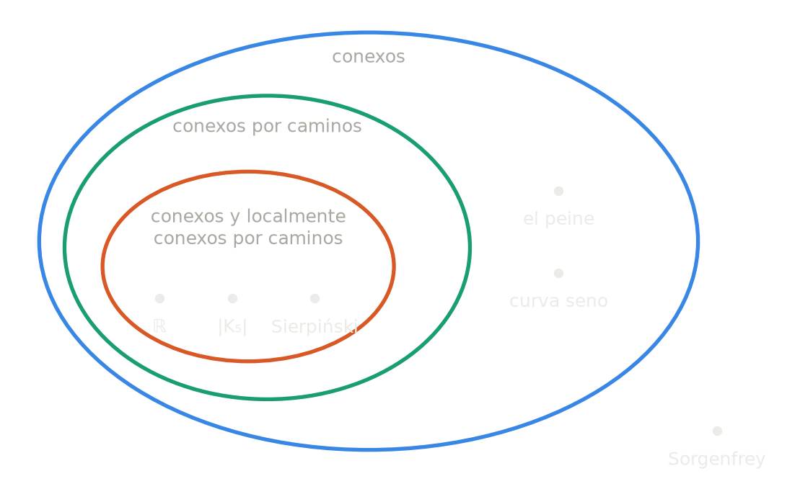
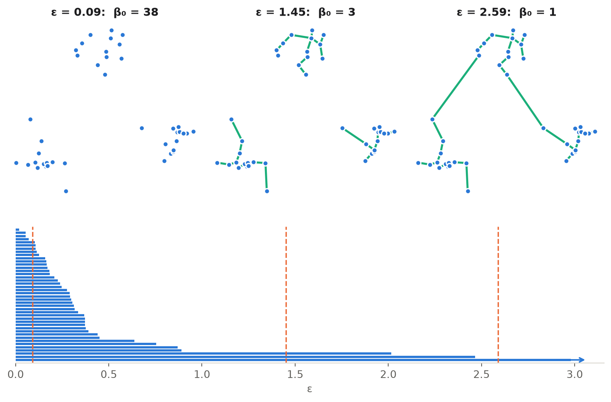
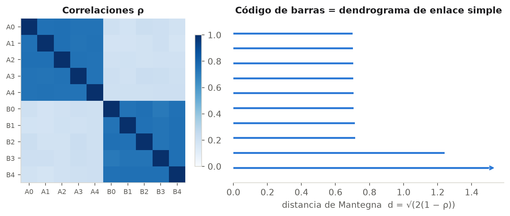

I.1 Componentes conexas
Dos maneras de decir «conexo», y un algoritmo que las une
Grafos y espacios topológicos, caminos y separaciones, el peine, union-find y su camino hacia la persistencia.
La sección en una mirada
El libro da dos definiciones de conexidad, y lo hace dos veces. Esa es la columna vertebral de toda la sección.
| Constructiva: «se puede llegar» | Por obstrucción: «no se puede cortar» | |
|---|---|---|
| Grafos | Hay un camino entre todo par de vértices | No existe una separación de los vértices |
| Espacios | Conexo por caminos | No existe una separación en dos abiertos |
| Testigo | Un camino (o un árbol generador, que los da todos) | La ausencia de un corte |
| En grafos | equivalentes (Proposición 1) | |
| En espacios | estrictamente más fuerte | estrictamente más débil (el peine) |
La definición constructiva exhibe un testigo: el camino. La de obstrucción niega la existencia de un testigo contrario: el corte. En el mundo discreto, si no hay corte, la búsqueda de caminos nunca se traba, y las dos definiciones coinciden. En el continuo aparecen espacios que no se pueden cortar y en los que, sin embargo, hay puntos a los que no se puede llegar. Toda la sección se puede leer como la historia de esa grieta.
| Bloque | Tema | Libro |
|---|---|---|
| 1 | Grafos: simple, camino, conexo, componente, árbol, separación | pp. 3-4 |
| 2 | Espacios topológicos: topología, base, subespacio | pp. 4-5 |
| 3 | Continuidad, caminos, conexo por caminos vs. conexo, el peine | pp. 5-6 |
| 4 | Union-find: la estructura básica | pp. 6-7 |
| 5 | Unión por tamaño, compresión de caminos, \(\alpha(n)\) | pp. 7-8 |
| 6 | Ejercicio 1, hacia la persistencia y hacia las finanzas | p. 24 |
1. Grafos
1.1 El grafo como objeto doble
El capítulo abre con una observación que es en sí misma un programa. En topología, un grafo es un objeto geométrico de dimensión 1: los vértices son puntos y las aristas, curvas. En matemática discreta es un objeto combinatorio: un conjunto y una relación. Las dos visiones son compatibles; la combinatoria es la receta y la geométrica es el plato.
La conexidad es una propiedad intrínseca: no depende de cómo dibujemos el grafo, en el papel o en el aire. Las secciones I.2 a I.4 tratan en cambio preguntas extrínsecas (cómo se ubica un grafo en el plano o en el espacio). El libro avisa que el matemático prefiere lo intrínseco, porque suele llevar a resultados más fundamentales.
1.2 Grafos simples
El porqué del diseño. La condición \(E \subseteq \binom{V}{2}\) hace dos cosas a la vez, y las dos salen gratis de la notación:
- los elementos de \(\binom{V}{2}\) son subconjuntos de dos elementos distintos, así que no hay lazos (una arista \(\{v, v\}\) tendría un solo elemento);
- \(E\) es un conjunto, no una lista ni un multiconjunto, así que no hay aristas múltiples entre el mismo par de vértices.
En un grafo simple la única información es «¿son adyacentes \(u\) y \(v\)? sí o no». Para un programador, eso es exactamente una matriz de adyacencia simétrica de ceros y unos con diagonal nula.
Consecuencias. Con \(n = \operatorname{card} V\) vértices y \(m = \operatorname{card} E\) aristas, \(m \le \binom{n}{2} = \tfrac{n(n-1)}{2}\). Todo grafo simple es un subgrafo del grafo completo \(K_n\), y elegir un grafo sobre \(n\) vértices etiquetados es elegir un subconjunto de las aristas de \(K_n\): hay exactamente \(2^{\binom{n}{2}}\) grafos simples (para \(n = 5\), \(2^{10} = 1024\)).
Ejemplos. El completo \(K_5\) (sus 10 aristas son los lados y las diagonales de un pentágono, con 5 cruces si se lo dibuja así: la figura I.1 del libro); el camino \(P_4\); el ciclo \(C_5\); el grafo de Petersen; y el caso extremo, \(n\) vértices sin ninguna arista: el grafo más desconexo posible, con \(n\) componentes.
Lo que no es simple.
- Los puentes de Königsberg (Euler, 1736): cuatro regiones de tierra y siete puentes, con dos puentes entre algunas regiones. Es un multigrafo. Es el primer problema de la teoría de grafos y también uno de los primeros de topología: la respuesta no depende de distancias ni de formas, solo de cómo están conectadas las cosas.
- Un vértice con un lazo.
- Los grafos dirigidos, cuyas aristas son pares ordenados, son otra especie.
1.3 Caminos y longitud
La imagen es cortar los rulos: cada vez que el recorrido vuelve a pisar un lugar por el que ya pasó, el rulo intermedio sobra. (La misma operación aplicada a un paseo al azar produce el loop-erased random walk, un objeto central de la probabilidad moderna.)
Dos consecuencias que vuelven más adelante:
- La distancia \(d(u, v)\), la longitud mínima de un camino de \(u\) a \(v\), convierte cada componente de un grafo en un espacio métrico. Es el primer puente entre el grafo combinatorio y el mundo continuo de los bloques 2 y 3.
- Un camino de longitud \(k\) es lo mismo que una función \(\{0, 1, \dots, k\} \to V\) que manda enteros consecutivos a vértices adyacentes: una manera de recorrer el grafo usando como molde el grafo camino \(P_k\). Guardemos esta imagen para la sección 3.3, donde el molde será el intervalo \([0, 1]\).
1.4 Conexidad y componentes
La mirada estructural ★. La relación «\(u \sim v\) si hay un camino de \(u\) a \(v\)» es una relación de equivalencia: es reflexiva (el camino de longitud 0), simétrica (se recorre el camino al revés) y transitiva (se concatenan dos caminos). Las componentes son exactamente sus clases de equivalencia, así que particionan \(V\): todo vértice está en exactamente una.
Esta observación es la que hace posible union-find: decidir la conexidad es mantener una partición de los vértices, y union-find es precisamente una estructura de datos para particiones.
1.5 Árboles y árboles generadores
El árbol como punto de equilibrio. Para un grafo con \(n\) vértices, son equivalentes:
- es un árbol (camino simple único entre cada par);
- es conexo y no tiene ciclos;
- es conexo y tiene \(n - 1\) aristas;
- no tiene ciclos y tiene \(n - 1\) aristas;
- es minimalmente conexo: sacar cualquier arista lo desconecta;
- es maximalmente acíclico: agregar cualquier arista crea un ciclo.
Las condiciones 5 y 6 cuentan la historia completa: un árbol está exactamente en el borde entre «tener demasiado pocas aristas para ser conexo» y «tener demasiadas para no tener ciclos». El libro destaca la 5; la 3 la prueba más adelante con union-find (sección 4.2).
Dos experimentos que conviene hacer con las manos (en la pieza de la sección 1.6, con la tijera):
- Agregar una arista \(e \notin T\) a un árbol crea exactamente un ciclo: el ciclo fundamental de \(e\).
- Quitar una arista \(e \in T\) parte el árbol en exactamente dos componentes: la arista era un puente, y las dos partes forman una separación. Es el corte fundamental de \(e\).
Ciclos fundamentales y cortes fundamentales son objetos duales, y esa dualidad reaparece, muy amplificada, en el capítulo V. Y un número para calibrar: \(K_5\) tiene \(5^{5-2} = 125\) árboles generadores (fórmula de Cayley, \(n^{n-2}\) para \(K_n\)); la figura I.1 del libro muestra uno.
1.6 Separaciones y la Proposición 1
La vuelta, con ojos de programador. «El conjunto de vértices alcanzables desde \(u\)» es un algoritmo: la búsqueda en anchura. Imaginemos una ola que parte de \(u\) y se expande arista por arista. Cuando la ola se detiene, pasa una de dos cosas:
- cubrió todo, y las aristas por las que avanzó forman un árbol generador: un testigo de que el grafo es conexo;
- no cubrió todo, y lo mojado y lo seco forman una separación: un testigo de que no lo es.
La demostración y el algoritmo son el mismo objeto. Probalo: elegí un grafo (o dibujá uno), elegí el origen y lanzá la ola. Después, sobre un grafo conexo, usá la tijera.
Certificados ★. La proposición tiene una lectura todavía más fina: cualquiera sea la respuesta, existe un testigo corto y fácil de verificar.
| Respuesta | Testigo | Tamaño | Cómo se verifica |
|---|---|---|---|
| «Es conexo» | Un árbol generador | \(n - 1\) aristas | Son aristas de \(E\), son \(n - 1\) y conectan todo |
| «No es conexo» | Una separación \((U, W)\) | \(n\) etiquetas | Ninguna arista de \(E\) cruza de \(U\) a \(W\) |
Quien recibe el veredicto no necesita confiar en el algoritmo: le alcanza con chequear el testigo. En el mundo continuo, en cambio, el peine será un espacio sin ningún corte y sin un camino hacia uno de sus puntos: ninguno de los dos testigos existe.
1.7 La Proposición 2: el escultor y el albañil
Dos estrategias opuestas llegan al mismo objeto:
- El escultor (la prueba): parte del bloque entero, el grafo, y saca material (aristas de ciclos) hasta que no sobra nada.
- El albañil (el algoritmo): parte de los vértices sueltos y pone ladrillos (aristas) de a uno, descartando cada ladrillo que cerraría un ciclo.
El albañil es exactamente union-find procesando las aristas (bloque 4), y si los ladrillos llegan ordenados por peso es el algoritmo de Kruskal. Las aristas que el albañil descarta son exactamente las que el escultor podría haber sacado. En resumen:
\[ \text{hay caminos entre todo par} \iff \text{no hay separación} \iff \text{hay un árbol generador.} \]
2. Espacios topológicos
2.1 Por qué abandonar las distancias
Para hablar de conexidad no hacen falta distancias: alcanza con saber qué puntos están cerca de cuáles, sin decir cuán cerca. Eso es una topología. Es el gesto que el prefacio del libro describe como pasar de la geometría a la topología: nos sacamos de encima el tamaño y nos quedamos con la conectividad.
2.2 La definición y su porqué
La pregunta que hay que hacerse es: ¿por qué intersecciones finitas pero uniones arbitrarias? La asimetría parece caprichosa hasta que se la lee con la siguiente clave.
Con esta clave, los axiomas son las leyes de la lógica de las observaciones:
| Axioma | Lectura como observación |
|---|---|
| \(X\) y \(\emptyset\) abiertos | «Siempre» y «nunca» se confirman sin medir nada |
| Intersección finita | Y de dos pruebas: se corren las dos y ambas terminan en tiempo finito |
| Unión arbitraria | O de muchas pruebas: alcanza con que una confirme (se corren en paralelo) |
| Intersección infinita: no | Y de infinitas pruebas: habría que esperar para siempre |
El ejemplo del libro es exactamente esto: \(\bigcap_{k \ge 1} (-\tfrac1k, \tfrac1k) = \{0\}\) no es abierto, porque confirmar todas las precisiones a la vez es confirmar «\(x = 0\)», y eso requiere precisión infinita.
Para un programador: abierto = predicado semidecidible, un test que termina diciendo «sí» cuando la respuesta es sí, aunque pueda no terminar nunca cuando es no. Esta lectura es un área seria de la matemática: Topology via Logic (S. Vickers, 1989) y la semántica de lenguajes de programación de D. Scott y M. Smyth.
Una segunda imagen, más geométrica: un conjunto es abierto si cada uno de sus puntos tiene margen de maniobra: se puede mover un poco en cualquier dirección sin salirse.
2.3 Ejemplos, de lo extremo a lo extraño
- Topología discreta: todos los subconjuntos son abiertos. Todo es observable y cada punto está aislado.
- Topología trivial (indiscreta): solo \(\emptyset\) y \(X\). Nada es observable; ningún par de puntos se distingue.
- La recta real usual: generada por los intervalos abiertos (sección 2.4).
- Espacios finitos. Sobre \(\{a, b\}\) hay exactamente cuatro topologías: la trivial, la discreta y dos copias del espacio de Sierpiński, cuyos abiertos son \(\emptyset, \{b\}, \{a, b\}\). Sobre 3 puntos hay 29 topologías (9 a menos de homeomorfismo). Una topología finita es lo mismo que un preorden, el orden de especialización (\(x \le y\) si todo abierto que contiene a \(x\) contiene a \(y\)), así que los espacios finitos se dibujan como grafos dirigidos. Es un puente inesperado entre topología y combinatoria.
El espacio de Sierpiński es la estrella de esta sección. Con la clave de las observaciones es el espacio de los valores de verdad observables: \(b\) es «confirmado» y \(a\) es «todavía no confirmado». Se puede observar que algo pasó, pero no que no pasó. Lo vamos a usar en la sección 3.2 para reinterpretar el ejemplo de continuidad del libro.
2.4 Bases
El porqué del diseño. La base son los abiertos básicos: las observaciones elementales a partir de las cuales se arman todas las demás. La condición (b) garantiza que el Y de dos observaciones elementales se pueda expresar con observaciones elementales.
La imagen que vale oro ★: discos, cuadrados y rombos dan la misma topología en \(\mathbb{R}^2\). Alrededor de cualquier punto, dentro de cada disco cabe un cuadrado centrado en el punto, dentro de ese cuadrado cabe un disco, y así indefinidamente. Ese anidamiento alternado implica que las dos bases generan los mismos abiertos.
Código
from matplotlib.patches import Circle, Polygon, Rectangle
for modo in MODOS:
with tema(modo) as p:
fig, ax = plt.subplots(figsize=(4.2, 4.2))
r = 1.0
formas = []
for paso in range(9):
tipo = paso % 3
if tipo == 0: # disco de radio r; adentro, el cuadrado inscripto (semilado r/√2)
formas.append(Circle((0, 0), r))
r = r / math.sqrt(2)
elif tipo == 1: # cuadrado de semilado r; adentro, el rombo inscripto (semidiagonal r)
formas.append(Rectangle((-r, -r), 2 * r, 2 * r))
else: # rombo de semidiagonal r; adentro, el disco inscripto (radio r/√2)
formas.append(Polygon([(r, 0), (0, r), (-r, 0), (0, -r)]))
r = r / math.sqrt(2)
colores = [p["acento"], p["seco"], p["enlace"]]
for k, f in enumerate(formas):
f.set_fill(False)
f.set_edgecolor(colores[k % 3])
f.set_linewidth(2)
ax.add_patch(f)
ax.plot(0, 0, "o", color=p["tinta"], ms=4)
ax.set_xlim(-1.08, 1.08)
ax.set_ylim(-1.08, 1.08)
ax.set_aspect("equal")
ax.axis("off")
plt.show()

Moraleja: la topología no ve formas, solo cercanía. Un disco y un cuadrado son la misma noción de «alrededor».
El contraejemplo que vale más oro todavía ★: la recta de Sorgenfrey. Si en \(\mathbb{R}\) usamos como base los intervalos semiabiertos \([a, b)\) en lugar de los abiertos \((a, b)\), obtenemos otra topología sobre el mismo conjunto. En ella \([0, 1)\) es abierto, y su complemento \((-\infty, 0) \cup [1, \infty)\) también (es unión de semiabiertos). Así que \([0, 1)\) es a la vez abierto y cerrado, y la recta de Sorgenfrey no es conexa (sección 3.5). El mismo conjunto \(\mathbb{R}\) es conexo o no según la topología: la conexidad es una propiedad del espacio topológico, no del conjunto.
2.5 Subespacios
El ejemplo del libro. En \([0, 1] \subseteq \mathbb{R}\), el conjunto \((\tfrac12, 1]\) es abierto, porque es \([0, 1] \cap (\tfrac12, 2)\). En \(\mathbb{R}\) no lo es: el \(1\) no tiene margen hacia la derecha.
La imagen: el borde del mundo. Para un habitante de \([0, 1]\) no existe nada más allá del \(1\). El \(1\) tiene margen de maniobra en todas las direcciones que existen en su mundo, que es solo hacia la izquierda. Ser abierto no es una propiedad de un conjunto, sino de un conjunto dentro de un universo. Esto importa muchísimo en el resto del libro, donde grafos y complejos viven como subespacios de \(\mathbb{R}^2\) o \(\mathbb{R}^d\).
3. Continuidad, caminos y conexidad
3.1 Continuidad
¿Por qué preimágenes y no imágenes? Porque la continuidad expresa «si la entrada se mueve poco, la salida se mueve poco», y eso se lee de atrás hacia adelante: fijada una tolerancia para la salida (un abierto \(U\) alrededor de \(f(x)\)), tiene que haber una tolerancia para la entrada (un abierto alrededor de \(x\) dentro de \(f^{-1}(U)\)) que la garantice. La versión con imágenes falla de entrada: una función constante es lo más continuo que hay y manda todo abierto a un punto, que no es abierto.
Recuperando el ε-δ. Para \(f : \mathbb{R} \to \mathbb{R}\), la ventana \((f(x) - \varepsilon, f(x) + \varepsilon)\) es un abierto de la salida y el intervalo \((x - \delta, x + \delta)\) es un abierto básico de la entrada dentro de su preimagen: la definición es equivalente a la del análisis.
Con la clave de las observaciones ★: \(f\) es continua si toda propiedad observable de la salida es una propiedad observable de la entrada. Dicho computacionalmente: la salida se puede aproximar tanto como se quiera midiendo la entrada con suficiente precisión. Por eso vale el principio (Brouwer, Turing) de que toda función computable sobre los reales es continua.
3.2 El ejemplo del libro, y su giro inesperado
El ejemplo. \(f : \mathbb{R} \to \mathbb{R}\) manda \((-\infty, 0]\) a \(0\) y \((0, \infty)\) a \(1\). No es continua: para \(0 < \varepsilon < 1\), el abierto \((-\varepsilon, \varepsilon)\) tiene preimagen \((-\infty, 0]\), que no es abierta.
La imagen. Fijada la ventana de tolerancia \(\varepsilon\) alrededor de \(f(0) = 0\), por más chica que sea la ventana de entrada alrededor de \(0\) siempre contiene puntos positivos, que saltan a \(1\), fuera de la ventana. No existe ningún δ que funcione. En el primer panel, achicá δ todas las veces que quieras; después mové \(x_0\) fuera del 0 y mirá cómo aparece un δ que funciona: la falla es local.
El giro ★. En el segundo panel, la misma fórmula va a \(Y = \{0, 1\}\) y probamos sus cuatro topologías:
| Topología en \(\{0,1\}\) | Abiertos | ¿Es continua \(f\)? | Por qué |
|---|---|---|---|
| Discreta | \(\emptyset, \{0\}, \{1\}, \{0,1\}\) | No | \(f^{-1}(\{0\}) = (-\infty, 0]\) no es abierto |
| Sierpiński con \(\{1\}\) abierto | \(\emptyset, \{1\}, \{0,1\}\) | Sí | \(f^{-1}(\{1\}) = (0, \infty)\) es abierto |
| Sierpiński con \(\{0\}\) abierto | \(\emptyset, \{0\}, \{0,1\}\) | No | \(f^{-1}(\{0\}) = (-\infty, 0]\) no es abierto |
| Trivial | \(\emptyset, \{0,1\}\) | Sí | Toda función hacia un espacio trivial es continua |
¡La misma función salta y es continua! La continuidad no es una propiedad de la fórmula, sino de la relación entre dos topologías.
La lectura computacional lo explica todo: \(f\) es el test «\(x > 0\)», que es semidecidible. Si \(x > 0\), alguna aproximación finita lo confirma; si \(x = 0\), ninguna aproximación finita descarta que sea positivo. En Sierpiński con \(\{1\}\) abierto, «1» es confirmado y «0» es todavía no: el salto está permitido solo en la dirección en que se puede observar. (En la pieza, cambiá \(f\) por \(g = 1 - f\), el test «\(x \le 0\)», y mirá cómo la continuidad se mueve a la otra copia de Sierpiński.) En general, una función continua \(X \to\) Sierpiński es exactamente lo mismo que un abierto de \(X\): su preimagen de «confirmado».
3.3 Caminos continuos
¿Es el análogo de los caminos discretos? Sí, y la analogía es precisa ★:
| Camino discreto | Camino continuo | |
|---|---|---|
| Molde | El grafo camino \(P_k = \{0, 1, \dots, k\}\) | El intervalo \([0, 1]\) |
| Qué se exige | Enteros consecutivos van a vértices adyacentes | Puntos cercanos van a puntos cercanos |
| Simple | Vértices distintos | Función inyectiva |
| Borrar repeticiones | Cortar rulos (Lema 1): trivial | Todo camino entre puntos distintos contiene uno simple (en espacios de Hausdorff): un teorema profundo |
En ambos casos un camino es una copia deformada de un segmento estándar, dibujada dentro del espacio. El intervalo \([0, 1]\) es la versión continua del grafo camino.
El puente concreto: la realización geométrica. Si dibujamos el grafo \(G\) como un espacio \(|G|\) (cada arista, un segmento), un camino discreto \(u_0, \dots, u_k\) se vuelve continuo: en el tiempo \(t \in [\tfrac{i}{k}, \tfrac{i+1}{k}]\) se recorre la arista \(u_i u_{i+1}\) a velocidad constante. Y recíprocamente, un camino continuo en \(|G|\) entre dos vértices pasa por una sucesión de vértices que, borrando rulos, es un camino discreto. Por eso
\[ G \text{ conexo} \iff |G| \text{ conexo por caminos} \iff |G| \text{ conexo}. \]
Para grafos, los tres mundos coinciden.
Caminos raros, para calibrar la intuición.
- La curva de Peano es un camino \([0, 1] \to [0, 1]^2\) sobreyectivo: pasa por todos los puntos del cuadrado. Un camino puede ser mucho más salvaje que «una curva».
- Un camino que salta ★. En Sierpiński \(\{a, b\}\) (con \(\{b\}\) abierto), la función \(\gamma(t) = a\) para \(t \le \tfrac12\) y \(\gamma(t) = b\) para \(t > \tfrac12\) es continua, porque \(\gamma^{-1}(\{b\}) = (\tfrac12, 1]\) es abierto en \([0, 1]\). Un camino hecho de un único salto. Es el mismo fenómeno del giro de la sección 3.2.
3.4 Conexo por caminos
Es la versión continua de la definición constructiva: se puede llegar.
3.5 Separaciones y conexidad
Es la versión continua de la definición por obstrucción: no se puede cortar. Formas equivalentes ★: \(X\) es conexo si y solo si los únicos subconjuntos a la vez abiertos y cerrados (clopen) son \(\emptyset\) y \(X\), si y solo si toda función continua \(X \to \{0, 1\}\) (con la topología discreta) es constante.
Con la clave de las observaciones: un clopen es una propiedad que se puede confirmar y también refutar en tiempo finito, es decir, decidible. Un espacio es conexo si no admite ninguna propiedad decidible no trivial. Por eso, por ejemplo, no existe ningún test computable total que separe a los reales en dos clases no vacías.
3.6 Conexo por caminos implica conexo
Las dos pruebas, lado a lado.
| Grafos (Proposición 1, ⇒) | Espacios (Teorema 1) |
|---|---|
| El camino empieza en \(U\) y termina en \(W\) | El camino empieza en \(U\) y termina en \(W\) |
| Hay un primer índice en que cruza: \(u_i \in U\), \(u_{i+1} \in W\) | Hay un supremo donde «cruza» |
| La arista \(u_i u_{i+1}\) cruza el corte: absurdo | \([0, 1]\) quedaría separado: absurdo |
Es el mismo argumento. En lo discreto el «primer cruce» es un índice; en lo continuo, un supremo, y la conexidad de \([0, 1]\) hace el papel de «no hay huecos entre enteros consecutivos».
3.7 La vuelta es falsa: el peine
La construcción. En \(\mathbb{R}^2\) tomamos la barra \([0, 1] \times \{0\}\), los dientes \(\{\tfrac1k\} \times [0, 1]\) para todo entero \(k \ge 1\), y el diente \(\{0\} \times [0, 1]\); y borramos el interior de este último, \(\{0\} \times (0, 1)\). Queda el peine con un diente borrado \(C\), con la topología de subespacio. Del diente borrado sobrevive solo la punta \(p = (0, 1)\) (y su base, que está en la barra).
La imagen: la torre visible e inalcanzable. Desde la barra, \(p\) se ve: cualquier vecindad suya, por chica que sea, contiene puntos del resto del peine. Pero no hay ningún camino que llegue. Cada intento de acercarse obliga a subir por un diente \(\tfrac1k\) y, para pasar al siguiente, a bajar hasta la barra. Llegar a \(p\) exigiría infinitas subidas y bajadas de altura \(\tfrac12\) en tiempo finito, y la continuidad lo prohíbe.
En la pieza: achicá el disco (siempre toca infinitos dientes), hacé zoom hacia \(p\) (los dientes no se separan: se amontonan, porque cerca de \(0\) dos dientes consecutivos distan \(\tfrac1k - \tfrac1{k+1} \approx x^2\)), aceptá el desafío de dibujar un camino hasta \(p\), y mirá el peine a través de la lente \(x \mapsto 1/x\), que lo convierte en una regla con un diente en cada entero y manda \(p\) al infinito.
Y el leitmotiv se cumple: \(C\) no tiene ningún corte (no hay testigo de desconexión) y no hay ningún camino hacia \(p\) (no hay testigo de conexión por caminos). En el mundo discreto eso es imposible (Proposición 1). Un hermano famoso, con el mismo fenómeno, es la curva seno del topólogo: \(\{(x, \sin \tfrac1x) : 0 < x \le 1\}\) junto con el segmento \(\{0\} \times [-1, 1]\).
3.8 La jerarquía, y por qué en este libro casi nunca importa
\[ \text{conexo por caminos} \;\subsetneq\; \text{conexo}. \]
El libro dice que «para la mayoría de los espacios que encontraremos, son lo mismo». La razón precisa ★:
Los grafos, los complejos simpliciales, las variedades, los abiertos de \(\mathbb{R}^n\) y los espacios finitos son localmente conexos por caminos, así que en ellos las dos nociones coinciden. El peine falla en un único punto: \(p\) no tiene vecindades chicas conexas por caminos. La grieta entre las dos definiciones es una patología local, concentrada en un punto donde el espacio se acumula.
Código
from matplotlib.patches import Ellipse
regiones = [
((0.4, -0.2), 10.4, 6.6, "conexos", (0.4, 2.7)),
((-1.2, -0.3), 6.4, 4.8, "conexos por caminos", (-1.2, 1.6)),
((-1.5, -0.6), 4.6, 3.0, "conexos y localmente\nconexos por caminos", (-1.5, 0.0)),
]
ejemplos = [
("ℝ", (-2.9, -1.1)), ("|K₅|", (-1.75, -1.1)), ("Sierpiński", (-0.45, -1.1)),
("el peine", (3.4, 0.6)), ("curva seno", (3.4, -0.7)), ("Sorgenfrey", (5.9, -3.2)),
]
for modo in MODOS:
with tema(modo) as p:
fig, ax = plt.subplots(figsize=(7.2, 4.6))
colores = [p["acento"], p["enlace"], p["seco"]]
for (centro, w, h, nombre, pos), color in zip(regiones, colores):
ax.add_patch(Ellipse(centro, w, h, fill=False, lw=2, edgecolor=color))
ax.text(*pos, nombre, ha="center", va="center", fontsize=9.5, color=p["tenue"])
for nombre, pos in ejemplos:
ax.plot(*pos, "o", ms=4, color=p["tinta"])
ax.text(pos[0], pos[1] - 0.32, nombre, ha="center", va="top", fontsize=9.5)
ax.set_xlim(-5.2, 7.0)
ax.set_ylim(-3.9, 3.4)
ax.set_aspect("equal")
ax.axis("off")
plt.show()

4. Union-find: el sistema de conjuntos disjuntos
4.1 El problema
Volvemos a los grafos con una pregunta algorítmica: decidir si un grafo es conexo. La idea del libro es procesar las aristas de a una y mantener en todo momento la partición de los vértices en componentes del grafo construido hasta ahí (la relación de equivalencia de la sección 1.4, construida incrementalmente).
- Al principio no hay aristas: \(n\) componentes, \(\{1\}, \{2\}, \dots, \{n\}\).
- Cada arista \((u, v)\) o bien fusiona dos componentes, o bien une dos vértices que ya estaban conectados.
- Al final, el grafo es conexo si y solo si queda un único conjunto, \([n] = \{1, \dots, n\}\).
El tipo abstracto de datos tiene dos operaciones. Find(i) devuelve el nombre del conjunto que contiene a \(i\) (un representante); Union(i, j), si \(i\) y \(j\) están en conjuntos distintos, los reemplaza por su unión. Find sirve para saber si dos vértices ya están juntos: Find(u) == Find(v).
4.2 Contar es demostrar: árboles, ciclos y números de Betti
El argumento del libro. Cada Union exitosa reduce en uno la cantidad de conjuntos. Se empieza con \(n\) y se termina con \(1\) si el grafo es conexo: hacen falta exactamente \(n - 1\) uniones exitosas, y las aristas que las provocaron forman un árbol generador (el albañil de la sección 1.7). Corolario: todo árbol con \(n\) vértices tiene \(n - 1\) aristas.
La extensión que anticipa el capítulo IV ★. Llevemos dos contadores: \(\beta_0\), la cantidad de conjuntos al final (las componentes), y \(\beta_1\), la cantidad de aristas rechazadas (las que unían vértices ya conectados). Cada arista o fusiona, y hay exactamente \(n - \beta_0\) fusiones, o se rechaza. Entonces \(m = (n - \beta_0) + \beta_1\), es decir:
\[ \boxed{\; n - m = \beta_0 - \beta_1 \;} \]
Cada arista rechazada cierra un ciclo nuevo, independiente de los anteriores: \(\beta_1\) cuenta los «agujeros» del grafo. \(\beta_0\) y \(\beta_1\) son los números de Betti del grafo y la fórmula es su característica de Euler. Sin decirlo, union-find calcula la homología del grafo en dimensiones 0 y 1, que es el tema del capítulo IV. No hace falta creerlo: lo comprobamos acá mismo con tcomp, sobre grafos al azar y con las tres estrategias.
Código
rng = random.Random(0)
comprobados = 0
for _ in range(1000):
n = rng.randint(1, 40)
posibles = [(u, v) for u in range(n) for v in range(u + 1, n)]
aristas = rng.sample(posibles, rng.randint(0, len(posibles)))
for estrategia in ESTRATEGIAS:
uf = UnionFind(n, estrategia)
for u, v in aristas:
uf.union(u, v)
assert n - len(aristas) == uf.componentes - uf.rechazadas # n - m = β₀ - β₁
comprobados += 1
print(f"n - m = β₀ - β₁ se cumplió en {comprobados} corridas (1000 grafos × 3 estrategias).")n - m = β₀ - β₁ se cumplió en 3000 corridas (1000 grafos × 3 estrategias).4.3 La representación: un bosque dentro de un arreglo
Cada conjunto se guarda como un árbol con punteros hacia arriba (up-tree): cada nodo apunta a su padre, y la raíz es el nombre del conjunto. Todos los árboles viven en un arreglo lineal \(V[1..n]\), donde \(V[i].\text{parent}\) es el padre de \(i\). La idea clave de la figura I.2 del libro es que el arreglo es el almacenamiento y el bosque es el significado: los nodos pueden estar en cualquier orden en el arreglo, lo que importa son los punteros. Por convención (p. 8), la raíz se apunta a sí misma, \(V[r].\text{parent} = r\), así no hace falta un valor especial null.
4.4 La versión básica
def find(i):
if parent[i] != i:
return find(parent[i]) # subir hasta la raíz
return i
def union(i, j):
x, y = find(i), find(j)
if x != y:
parent[x] = y # la raíz x pasa a colgar de la raíz yEjemplo 1. \(n = 4\), \(E = \{(1,2), (2,3), (1,3), (3,4)\}\), versión básica. La tabla no está copiada: la produce tcomp paso a paso.
Código
uf = UnionFind(4, "ingenua")
filas = ["| Paso | Arista | Acción | `parent[1..4]` | Componentes |", "|---|---|---|---|---|",
f"| 0 | | | `{libro(uf.parent)}` | {{1}} {{2}} {{3}} {{4}} |"]
for paso, (u, v) in enumerate([(1, 2), (2, 3), (1, 3), (3, 4)], start=1):
x, y = uf.raiz(u - 1) + 1, uf.raiz(v - 1) + 1
aceptada = uf.union(u - 1, v - 1)
accion = f"`parent[{x}] = {y}`" if aceptada else "**rechazo**: cierra un ciclo"
comps = " ".join("{" + ",".join(str(i + 1) for i in sorted(c)) + "}" for c in uf.conjuntos())
filas.append(f"| {paso} | ({u},{v}) | {accion} | `{libro(uf.parent)}` | {comps} |")
print("\n".join(filas))
print(f"\nAl final: β₀ = {uf.componentes} (conexo), β₁ = {uf.rechazadas} (el triángulo 1-2-3), "
f"altura del bosque = {uf.altura()}.")| Paso | Arista | Acción | parent[1..4] |
Componentes |
|---|---|---|---|---|
| 0 | [1, 2, 3, 4] |
{1} {2} {3} {4} | ||
| 1 | (1,2) | parent[1] = 2 |
[2, 2, 3, 4] |
{1,2} {3} {4} |
| 2 | (2,3) | parent[2] = 3 |
[2, 3, 3, 4] |
{1,2,3} {4} |
| 3 | (1,3) | rechazo: cierra un ciclo | [2, 3, 3, 4] |
{1,2,3} {4} |
| 4 | (3,4) | parent[3] = 4 |
[2, 3, 4, 4] |
{1,2,3,4} |
Al final: β₀ = 1 (conexo), β₁ = 1 (el triángulo 1-2-3), altura del bosque = 3.
Mirá el árbol final: es la cadena \(1 \to 2 \to 3 \to 4\), de altura \(3 = n - 1\). Ese es el problema de la versión básica. Recorrelo en el laboratorio: las tres vistas (el grafo, el bosque y el arreglo) son el mismo estado, y podés cambiar de estrategia en cualquier paso.
4.5 El peor caso de la versión básica
Con la secuencia Union(1,2), Union(1,3), …, Union(1,n), cada unión cuelga la raíz vieja debajo del vértice nuevo y el árbol degenera en una cadena de longitud \(n - 1\). Cada Find desde el fondo cuesta \(n - 1\) pasos y el costo total se vuelve cuadrático. Saltos de puntero al unir todo y hacer después \(n\) veces Find(1), medidos por tcomp:
Código
def peor_caso(n, estrategia):
uf = UnionFind(n, estrategia)
for k in range(1, n):
uf.union(0, k)
for _ in range(n):
uf.find(0)
return uf.saltos
print("| $n$ | " + " | ".join(NOMBRES[e] for e in ESTRATEGIAS) + " |")
print("|---|---|---|---|")
for n in (10, 100, 1000):
print(f"| {n:,} | " + " | ".join(f"{peor_caso(n, e):,}" for e in ESTRATEGIAS) + " |")| \(n\) | básica | por tamaño | tamaño + compresión |
|---|---|---|---|
| 10 | 126 | 18 | 18 |
| 100 | 14,751 | 198 | 198 |
| 1,000 | 1,497,501 | 1,998 | 1,998 |
(En el laboratorio, el escenario «Peor caso de la básica» muestra la cadena creciendo.)
5. Mejorando el tiempo de ejecución
5.1 Unión por tamaño
La regla: siempre se cuelga el árbol más chico debajo del más grande. Cada raíz guarda el tamaño de su árbol.
def union(i, j):
x, y = find(i), find(j)
if x != y:
if size[x] > size[y]:
x, y = y, x # x es siempre el árbol más chico
parent[x] = y
size[y] += size[x]Con tamaños iguales, el libro cuelga \(x\) de \(y\); tcomp respeta esa convención al pie de la letra.
La imagen: cada vez que bajás un escalón, tu mundo por lo menos se duplica. Bajar es caro porque solo se baja al fusionarse con algo más grande. En la empresa: en una fusión, el director de la empresa más chica le reporta al de la más grande, así que la cadena de mando de cualquier empleado crece un nivel solo cuando su empresa al menos se duplica. El árbol binomial, que se obtiene fusionando siempre árboles de igual tamaño, alcanza la cota exactamente: es el peor caso de la unión por tamaño (escenario «Árbol binomial» del laboratorio).
5.2 Compresión de caminos
La regla: cada vez que un Find recorre un camino hasta la raíz, todos los nodos del camino pasan a apuntar directamente a la raíz.
def find(i):
if parent[i] != i:
parent[i] = find(parent[i]) # encontrar la raíz y colgarse de ella
return parent[i]En el pseudocódigo del libro, return V[i].parent = Find(V[i].parent) hace las dos cosas en una línea, porque la asignación devuelve el valor asignado. Es la recursión la que permite comprimir a la vuelta: primero se baja hasta la raíz y, al regresar de cada llamada, se re-apunta cada nodo. (En tcomp la compresión es iterativa, en dos pasadas, para no chocar con el límite de recursión de Python en cadenas largas; el resultado es idéntico.)
En la empresa: después de escalar una consulta hasta el director, todos los que participaron de la cadena reciben línea directa con él. La burocracia se aplana sola, justo donde se usa.
Efecto medido: árbol binomial de altura \(\log_2 n\) y \(n\) consultas Find sobre la hoja más profunda.
Código
def binomial(k, estrategia):
n = 2**k
uf = UnionFind(n, estrategia)
paso = 1
while paso < n:
for i in range(0, n, 2 * paso):
uf.union(i, i + paso)
paso *= 2
hoja = max(range(n), key=uf.profundidad)
uf.saltos = 0
for _ in range(n):
uf.find(hoja)
return uf.saltos
print("| $n$ | " + " | ".join(NOMBRES[e] for e in ESTRATEGIAS) + " |")
print("|---|---|---|---|")
for k in (4, 7, 10):
print(f"| {2**k:,} | " + " | ".join(f"{binomial(k, e):,}" for e in ESTRATEGIAS) + " |")| \(n\) | básica | por tamaño | tamaño + compresión |
|---|---|---|---|
| 16 | 64 | 64 | 18 |
| 128 | 896 | 896 | 133 |
| 1,024 | 10,240 | 10,240 | 1,032 |
La unión por tamaño acota cada consulta en \(\log_2 n\) saltos; la compresión hace que, después de la primera, las demás cuesten un solo salto.
5.3 Ejemplo 2: las dos mejoras en la misma llamada
\(n = 8\), unión por tamaño y compresión de caminos. Después de Union(1,2), Union(3,4), Union(1,3) y Union(5,6) el arreglo queda como en la primera fila de la tabla. Entonces llega Union(1,5):
Find(1)recorre \(1 \to 2 \to 4\) y, a la vuelta, comprime:parent[1] = 4;Find(5)recorre \(5 \to 6\): raíz 6, tamaño 2;- los tamaños son \(4 > 2\): intercambio (\(x \leftrightarrow y\)), así que el árbol de 6, el chico, cuelga del de 4:
parent[6] = 4ysize[4] = 6.
Código
uf = UnionFind(8, "completa", trazar=True)
for u, v in [(1, 2), (3, 4), (1, 3), (5, 6)]:
uf.union(u - 1, v - 1)
antes = libro(uf.parent)
uf.union(0, 4)
despues = libro(uf.parent)
enlace = uf.traza[-1]
print("| $i$ | " + " | ".join(str(i) for i in range(1, 9)) + " |")
print("|---|" + "---|" * 8)
print("| `parent` antes de `Union(1,5)` | " + " | ".join(map(str, antes)) + " |")
print("| `parent` después | " + " | ".join(
f"**{d}**" if d != a else str(d) for a, d in zip(antes, despues)) + " |")
print(f"\nTraza de `tcomp`: {'hubo' if enlace.intercambio else 'no hubo'} intercambio; "
f"enlace (hijo, padre) = {tuple(libro(enlace.enlace))}; size[4] = {uf.size[3]}.")| \(i\) | 1 | 2 | 3 | 4 | 5 | 6 | 7 | 8 |
|---|---|---|---|---|---|---|---|---|
parent antes de Union(1,5) |
2 | 4 | 4 | 4 | 6 | 6 | 7 | 8 |
parent después |
4 | 4 | 4 | 4 | 6 | 4 | 7 | 8 |
Traza de tcomp: hubo intercambio; enlace (hijo, padre) = (6, 4); size[4] = 6.
Un Find(5) posterior recorre \(5 \to 6 \to 4\) y comprime parent[5] = 4: todos quedan a profundidad 1. Recorrelo en el laboratorio, que abre justo en Union(1,5); retrocedé un paso y volvé a avanzar mirando el bosque.
5.4 El costo final: la inversa de Ackermann
Con las dos mejoras, una secuencia de \(m\) operaciones sobre \(n\) elementos cuesta a lo sumo una constante por \(m\,\alpha(n)\), donde \(\alpha\) es la inversa de la función de Ackermann (Tarjan, 1975, que también probó que la cota no se puede mejorar en general). El libro no demuestra el resultado.
¿Cuán lento crece \(\alpha\)? Con la definición de Cormen, Leiserson, Rivest y Stein (\(A_0(j) = j + 1\) y \(A_k(j) = A_{k-1}^{(j+1)}(j)\), es decir, \(A_{k-1}\) aplicada \(j + 1\) veces a partir de \(j\)), \(\alpha(n)\) es el menor \(k\) con \(A_k(1) \ge n\):
| \(k\) | \(A_k(1)\) | \(\alpha(n) = k\) para |
|---|---|---|
| 0 | 2 | \(n \le 2\) |
| 1 | 3 | \(n = 3\) |
| 2 | 7 | \(4 \le n \le 7\) |
| 3 | 2047 | \(8 \le n \le 2047\) |
| 4 | \(\gg 10^{600}\) (más que partículas en el universo observable, \(\approx 10^{80}\)) | todo \(n\) que se pueda escribir |
En la práctica \(\alpha(n) \le 4\): «tiempo constante por operación» es cierto en la práctica, pero no en la teoría, porque \(\alpha(n) \to \infty\).
5.5 Resumen comparativo
| Estrategia | Altura máxima | Costo de \(m\) operaciones |
|---|---|---|
| Básica | \(n - 1\) | \(\Theta(m\,n)\) en el peor caso |
| Unión por tamaño | \(\log_2 n\) | \(O(m \log n)\) |
| Tamaño + compresión | \(\log_2 n\), y se aplana con el uso | \(O(m\,\alpha(n))\) |
6. Ejercicio 1 y puentes
6.1 Ejercicio 1 del capítulo (p. 24)
Union-find decide la conexidad en tiempo proporcional a \((n + m)\,\alpha(n)\).
(i) Un algoritmo en tiempo \(n + m\). Es la ola de la sección 1.6: búsqueda en anchura desde un vértice, con listas de adyacencia. Cada vértice entra a la cola una vez y cada arista se mira dos veces (una por extremo): tiempo \(O(n + m)\). Si la ola cubre los \(n\) vértices, el grafo es conexo y las aristas usadas son un árbol generador; si no, lo alcanzado y lo no alcanzado son una separación. (tcomp.conexidad.certificado.)
(ii) Calcular las componentes en tiempo \(n + m\). Se recorren los vértices en orden; cada vez que uno no tiene etiqueta, se lanza desde él una ola nueva con una etiqueta nueva. Cada vértice y cada arista se procesan una sola vez en total. (tcomp.conexidad.componentes.)
Entonces, ¿para qué union-find? Porque la ola necesita todo el grafo de antemano. Union-find funciona en línea: las aristas llegan de a una, en cualquier orden, y en todo momento se puede preguntar si dos vértices están conectados. Es exactamente la situación de Kruskal y de la persistencia, donde las aristas llegan ordenadas por un parámetro.
6.2 Hacia adelante: persistencia en dimensión 0 (capítulo VII)
Tomemos una nube de puntos y un radio \(\varepsilon\) que crece desde 0, y conectemos dos puntos cuando su distancia es a lo sumo \(\varepsilon\). Procesar las aristas ordenadas por longitud con union-find es lo mismo que ver crecer \(\varepsilon\):
- cada
Unionexitosa es la muerte de una componente en el tiempo \(\varepsilon\) = longitud de la arista; - las aristas aceptadas forman el árbol generador mínimo (Kruskal);
- el registro de nacimientos (todos en 0) y muertes es el código de barras de la homología persistente en dimensión 0.
Mirá el proceso entero: las bolas de radio \(\varepsilon/2\) crecen, cada arista que aparece y une dos componentes es una Union exitosa (la componente absorbida toma el color de la que queda como raíz, igual que en el laboratorio), y en paralelo cada barra se detiene en el instante en que su componente muere. Los datos salen de tcomp: las fusiones son las de Kruskal y quién cuelga de quién lo decide tcomp.union_find.
Código
rng = np.random.default_rng(3)
centros = np.array([[0.0, 0.0], [4.2, 0.6], [1.9, 3.6]])
X = np.vstack([c + rng.normal(scale=0.38, size=(14, 2)) for c in centros])
arbol = arbol_generador_minimo(X)
barras = persistencia_0(X)
# radios elegidos a partir del propio código de barras: antes de casi toda fusión,
# entre las fusiones internas y las fusiones entre grupos (β₀ = 3), y al final (β₀ = 1)
muertes = sorted(m for _, m in barras if math.isfinite(m))
radios = (round(0.5 * muertes[len(muertes) // 3], 2),
round((muertes[-3] + muertes[-2]) / 2, 2),
round(muertes[-1] * 1.05, 2))
for modo in MODOS:
with tema(modo) as p:
fig = plt.figure(figsize=(8.2, 5.4), layout="constrained")
arriba = fig.subfigures(2, 1, height_ratios=[1.25, 1])
ejes = arriba[0].subplots(1, 3)
for ax, eps in zip(ejes, radios):
nube_con_arbol(ax, X, arbol, p, eps=eps)
uf = UnionFind(len(X))
for i, j, peso in arbol:
if peso <= eps:
uf.union(i, j)
ax.set_title(f"ε = {eps}: β₀ = {uf.componentes}")
ax = arriba[1].subplots()
codigo_de_barras(ax, barras, p, tope=radios[-1] * 1.15)
for eps in radios:
ax.axvline(eps, color=p["seco"], lw=1.3, ls="--")
plt.show()

¿Es correcto? tcomp es una implementación propia, así que lo contrastamos con la librería de referencia, GUDHI, sobre la misma nube:
Código
import gudhi
pares = gudhi.RipsComplex(points=X).create_simplex_tree(max_dimension=1).persistence(min_persistence=-1)
muertes_gudhi = sorted(m for dim, (_, m) in pares if dim == 0 and math.isfinite(m))
muertes_tcomp = sorted(m for _, m in barras if math.isfinite(m))
assert np.allclose(muertes_tcomp, muertes_gudhi)
dif = max(abs(a - b) for a, b in zip(muertes_tcomp, muertes_gudhi))
print(f"{len(muertes_tcomp)} muertes finitas: tcomp y GUDHI coinciden "
+ ("exactamente." if dif == 0 else f"(máx. diferencia {dif:.1e})."))41 muertes finitas: tcomp y GUDHI coinciden exactamente.Cuando las componentes nacen en momentos distintos (filtraciones de funciones, capítulo VII), la fusión sigue la regla del mayor: al fusionarse dos componentes, muere la más joven. Es una variante de la unión por tamaño, pero por edad.
6.3 Puente a finanzas
Con los retornos de \(N\) activos, la distancia de correlación \(d_{ij} = \sqrt{2(1 - \rho_{ij})}\) (Mantegna, 1999) convierte el mercado en una nube de puntos: activos muy correlacionados quedan cerca. Union-find sobre las aristas ordenadas por \(d\) da, de una sola vez:
- el árbol generador mínimo del mercado, la «columna vertebral» de las correlaciones;
- el clustering jerárquico de enlace simple (single linkage), cuyo dendrograma es el código de barras de dimensión 0;
- y, con ventanas deslizantes en el tiempo, la cantidad de componentes a un umbral fijo como indicador de régimen: en crisis las correlaciones suben y el mercado «se conecta» antes.
Un ejemplo con datos sintéticos: dos sectores de cinco activos cada uno, con un factor de mercado común y un factor propio por sector (los datos reales quedan para el proyecto de finanzas).
Código
from scipy.cluster.hierarchy import linkage
rng = np.random.default_rng(7)
dias, por_sector = 750, 5
mercado = rng.normal(size=dias)
sectores = [rng.normal(size=dias) for _ in range(2)]
retornos = np.column_stack([
0.5 * mercado + 0.8 * sectores[s] + 0.55 * rng.normal(size=dias)
for s in range(2) for _ in range(por_sector)
])
rho = np.corrcoef(retornos, rowvar=False)
D = np.sqrt(2 * (1 - rho))
np.fill_diagonal(D, 0.0)
barras_mercado = persistencia_0(distancias=D)
for modo in MODOS:
with tema(modo) as p:
fig, (ax1, ax2) = plt.subplots(1, 2, figsize=(8.4, 3.4), layout="constrained",
gridspec_kw={"width_ratios": [1, 1.4]})
im = ax1.imshow(rho, vmin=0, vmax=1, cmap="Blues" if modo == "claro" else "Blues_r")
ax1.set_xticks(range(10), [f"A{i}" if i < 5 else f"B{i - 5}" for i in range(10)], fontsize=8)
ax1.set_yticks(range(10), [f"A{i}" if i < 5 else f"B{i - 5}" for i in range(10)], fontsize=8)
ax1.set_title("Correlaciones ρ")
fig.colorbar(im, ax=ax1, shrink=0.8)
codigo_de_barras(ax2, barras_mercado, p, tope=1.5)
ax2.set_xlabel("distancia de Mantegna d = √(2(1 − ρ))")
ax2.set_title("Código de barras = dendrograma de enlace simple")
plt.show()

¿El código de barras es de verdad el dendrograma? Lo contrastamos con el enlace simple de SciPy:
Código
alturas = np.sort(linkage(D[np.triu_indices(10, 1)], method="single")[:, 2])
assert np.allclose(alturas, sorted(m for _, m in barras_mercado if math.isfinite(m)))
fusiones = kruskal(distancias=D)
print("Las alturas del dendrograma de enlace simple de SciPy coinciden con las muertes de tcomp.")
print(f"Última fusión (los dos sectores se conectan): d = {fusiones[-1][0]:.3f}, "
f"es decir ρ = {1 - fusiones[-1][0] ** 2 / 2:.2f}.")Las alturas del dendrograma de enlace simple de SciPy coinciden con las muertes de tcomp.
Última fusión (los dos sectores se conectan): d = 1.242, es decir ρ = 0.23.6.4 Notas para formalización (Lean)
- Lema de los apretones de manos (la suma de los grados es \(2m\)): primer contacto con Lean; está en Mathlib como
SimpleGraph.sum_degrees_eq_twice_card_edges. - Un árbol con \(n\) vértices tiene \(n - 1\) aristas: también está en Mathlib, en torno a
SimpleGraph.IsTree.card_edgeFinset(verificar el nombre en la versión instalada). - Proposición 1 (conexo ⟺ sin separación): buen candidato a formalización propia, porque su prueba es corta y constructiva y probablemente no esté en Mathlib con esta forma.
Ejercicios propuestos
- Probá las seis caracterizaciones del árbol de la sección 1.5. Pista: contá aristas con union-find.
- Mostrá que la recta de Sorgenfrey no es conexa, pero que \([0, 1)\) con la topología usual sí lo es. Pista: secciones 3.5 y 3.6.
- Enumerá las cuatro topologías de \(\{a, b\}\) y decidí cuáles son conexas y cuáles conexas por caminos. Pista: Sierpiński es conexo por caminos (sección 3.3).
- ¿Es continua la composición de funciones continuas? Probalo con preimágenes y explicalo con la clave de las observaciones.
- Construí, para cada \(n\), una secuencia de uniones que haga que la unión por tamaño alcance altura exactamente \(\lfloor \log_2 n \rfloor\).
- Probá que si cada
Unioncuelga la raíz de menor altura (unión por rango), también vale la cota \(\log_2 k\).
Referencias
- H. Edelsbrunner y J. L. Harer, Computational Topology: An Introduction, AMS, 2010, sección I.1 y ejercicio 1 del capítulo I.
- R. E. Tarjan, «Efficiency of a good but not linear set union algorithm», Journal of the ACM 22 (1975).
- T. H. Cormen, C. E. Leiserson, R. L. Rivest y C. Stein, Introduction to Algorithms, capítulo sobre estructuras de datos para conjuntos disjuntos.
- S. Vickers, Topology via Logic, Cambridge University Press, 1989.
- R. N. Mantegna, «Hierarchical structure in financial markets», The European Physical Journal B 11 (1999).